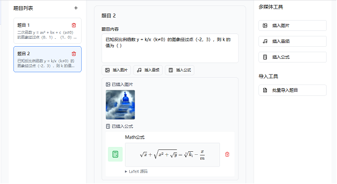
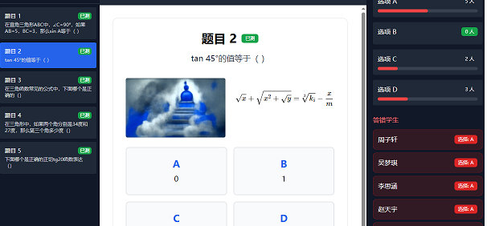
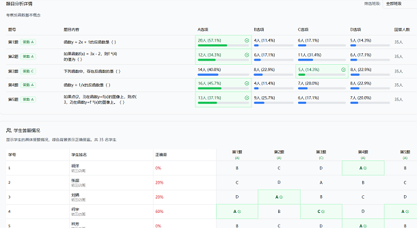
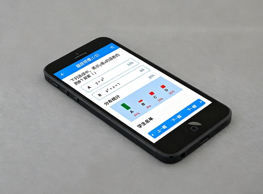

教研文章初稿
评职称、交课题报告，素材一堆却写不出第一段？「教研文章初稿」把主题和素材变成带标题、摘要、关键词、正文、参考文献的初稿，老师在上面改。
阅读全文 →数据驱动，因材施教 —— 用一堂课，见证数据如何改变教学。
堂测网以课堂测评与教学数据为核心，通过即时测评、可视化分析与智能反馈，帮助教师在每一堂课中做出更精准的教学决策，实现个性化教学与教学效果的持续提升。
评职称、交课题报告，素材一堆却写不出第一段？「教研文章初稿」把主题和素材变成带标题、摘要、关键词、正文、参考文献的初稿，老师在上面改。
阅读全文 →周一早上打开教案，讲得最好的开场没了。版本管理不是备份，是给工作留一条时间线：留底、可回、可比，管的不只是文件，是工作过程。
阅读全文 →堂测指南只讲发卡、建题、扫码三步，这篇补上 10 种公开课用法：出门票、课前摸底、两轮测、选项投票……每种配一个能直接搬进课堂的例子，挑一种…
阅读全文 →把教材里的实验截图或者拍照给TAIWE教师助手，交待你的要求，它就能为你生成HTML格式的3D可交互仿真实验课件。这个视频演示如何将高一化学…
阅读全文 →学生论文被批“论证不充分”，老师却难一句话说清差在哪。TAIWE 的论点润色把一段论段拆成诊断、建议、改稿三样，帮老师把“再充实一下”变成具…
阅读全文 →公开课加 AI，不是把每个环节都改一遍。先明确教学目标，找出这节课需要解决的一环，再判断 AI 是否能帮上忙，让技术真正服务课堂。
阅读全文 →家长群传的“禁止教师用 AI 备课”是误读，全国网络辟谣在 2026 年 10 月 14 日已澄清。政策鼓励用、不滥用。《教师生成式人工智能…
阅读全文 →一节课听完，笔记本上只剩几行潦草的字，评课时全凭印象。把课录下来，用 TAIWE 转成文字，对照导入的课标和教材做复盘，让记录能查、能复用。
阅读全文 →赵春用AI不到一分钟批完全班30多篇作文，纠错反而更花时间。麦可思调研3000多名高校教师：80%受访专任教师频繁用AI，深度应用后提效感受…
阅读全文 →79% 的受访学生用 AI 写作业，只有 47% 被教过怎么用。缺的不是工具，是规则。绿灯、黄灯、红灯三级规则，每份作业标明等级，再加"找出…
阅读全文 →同一份作业，有人用 AI 理清思路，有人却直接交出答案。哈佛大学教育学院 Compass Collaborative 推出 AI Guida…
阅读全文 →AI 教育时代，老师角色是否改变，关键不在设备进校，而在过去做不起的教学动作有没有变便宜。本文给出一条判断标准，再把四个班的周测分析流程展开…
阅读全文 →微软正在把 Classroom 做成独立的教学平台，把作业、课堂作业、成绩、课堂笔记本、学习加速器和洞察放在同一个入口里，面向教师的 AI …
阅读全文 →3 位美国老师把备课整件活交给 Muse，自己只做审核，交办公式和做法能直接抄。
阅读全文 →AI 出的题看着全，发下去才发现超纲、答案错、难度偏。发给学生之前，先按这 5 道关验一遍：定范围、定题型和数量、答案自己先做一遍、验难度、…
阅读全文 →AI数字人进了课堂，老师最关心的不是“谁来教”，而是“谁来干什么”。佛山高明博雅培文学校让AI负责即时反馈、错题归集、自动批改和伴学答疑，真…
阅读全文 →学生用AI写作业，老师用AI改卷子，作业提交和批改都更快了，真正需要看见的学习过程却可能被省掉。对中小学老师来说，课堂要补回三步：留下过程材…
阅读全文 →分层作业卡住时，先别急着按学生分层，试试按题目的做法分层：照着做、换着问、自己搭。本文以八年级数学一次函数为例，说明怎样分类、怎样布置和讲评…
阅读全文 →一台机器5分钟扫完一个班，红笔批注直接打回原卷。作文、步骤题、字迹难辨的卷子，哪些必须老师亲自看？复核的时间，到底省没省？
阅读全文 →白字指令让32名学生的答案出现“马达加斯加”，学生又让AI装笨。问题不在抓作弊，而在评价只盯成品，却看不见思考过程。
阅读全文 →卷子改不完，先分三类：客观题交AI初判，老师抽查；主观题老师自己判，AI只帮归类；争议题留到课堂核对。动手前定三条：标准统一、先拿一小叠试、…
阅读全文 →上周欧美教育AI的关键词是规矩与证据：谷歌的搜索捆绑引来议员致函与街头抗议，英国与美国工会同周给AI产品立规矩；而AI到底帮了学习多少，拿出…
阅读全文 →上周中文世界教育AI的关键词是展会与缺口：台湾教育科技展上教育部与厂商同台亮相，香港的讨论则点出用得多、教得少；AI伦理开始落到学生的具体作…
阅读全文 →公开课最怕讲完不知道学生听懂没有。堂测用纸质答题卡加手机扫码，发卡、建题、扫码三步上手，一节课排成课前摸底、课中测、出门票四段，测完数据还能…
阅读全文 →期中卷子考完了，期末备考还用得上：5 张表按顺序排好：出卷、分析、错题、复习、通知，空白栏直接填就能用。
阅读全文 →数分钟完成原本几个小时的高等数学教学备课：教材准备、告诉 TAIWE 课时内容，一次生成教案、课件大纲、导学案、作业设计、课堂评价表、教师反…
阅读全文 →教务档案散、乱、借了不还，多半是没定过规则。本期讲 TAIWE 的 archive_manage 技能：给出范围和分类，输出一整套方案：分类…
阅读全文 →期中卷子判完了，讲评课先讲哪几道？5 张表按顺序排好：挑题、教案、订正、评语、核验，空白栏直接填就能用。
阅读全文 →直接向 AI 要教案，省的是打字的时间，赔进去的是返工。先把课题资料、学校要求、旧教案交给它，让它先懂你，再生成。
阅读全文 →计划、总结、通知写不完，先让 AI 出第一版草稿，老师只做核对和拍板。讲清用途、要点、限制三句话，学生资料不进个人账号，成稿自己负责，省下的…
阅读全文 →AI 出的题总生硬，别先换模型。把优秀教师的专业判断写成能执行、能检查的规则，生成前对着写，生成后对着查。
阅读全文 →AI 教案看着全对，不等于上课不翻车。每次只验 3 处：课标、实验、难度，验完再决定敢不敢用。
阅读全文 →AI 批改完，第二天讲评先讲哪几道？先共性错，再思路错，交叉先看上游，最后留一道当场改。
阅读全文 →上周欧美教育AI的关键词是收紧与追问：多地收紧学生端生成式AI，同时用调查与试验追问它到底帮了学习，还是挤占了练习。
阅读全文 →教师选择AI工具，不能只看谁生成得快、功能多，更要看一门课的工作能否持续积累。
阅读全文 →上周中文世界教育AI的关键词是落地：课时、教师编制与课堂展示都写成了具体数字，大学与中学的资源通道也在机制化打通。
阅读全文 →六个词先弄清：大模型、数据、Token、上下文、多模态、智能体。够用的工作概念，分段处理长材料才不漏。
阅读全文 →AI回答顺不等于对：生成是按规律接续文本，三类来源要拆开核，附一张可抄的来源核对表。
阅读全文 →学年末写总结，卡住人的往往不是没干活，而是不知道怎么把零散记录收成总-分-总。TAIWE 的 annual_summary 按类型、时间段和…
阅读全文 →TAIWE技能图鉴01：分级提示设计，帮老师把一道题拆成3到5级（默认4级）提示阶梯，每级只说一件事，兜底前不泄露答案，兜底时要求自我解释。…
阅读全文 →老师们的课堂小测终于不用“等收卷、慢统计”了！自主研发的二维码答题卡（学生无需带手机，举卡即答题）+ 秒速扫码 APP（批量识别仅需 3 秒…
阅读全文 →老师们的课堂小测终于不用“等收卷、慢统计”了！自主研发的二维码答题卡（学生无需带手机，举卡即答题）+ 秒速扫码 APP（批量识别仅需 3 秒…
阅读全文 →老师们的课堂小测终于不用“等收卷、慢统计”了！自主研发的二维码答题卡（学生无需带手机，举卡即答题）+ 秒速扫码 APP（批量识别仅需 3 秒…
阅读全文 →真正的教师 AI，必须具备五大功能特点，才能真正秒懂老师的日常。核心角色在于对学习者进行精准画像和个性分析。
阅读全文 →项目思维体现在哪里。不是“今天备一节课”，而是“这个学期要交付什么”。不是“学生考了多少分”，而是“学情数据如何反哺教学”。
阅读全文 →这期视频4分钟带你看懂Markdown，再看看在TAIWE里怎么用。
阅读全文 →老师你是否遇到过，备课时间不足，觉得课件制作是件头疼的事情，而且做出来的课件千篇一律、质量一般。
阅读全文 →演示如何通过截图，为教材例题快速制作互动式课件。
阅读全文 →老师们在把手头学生相关数据提交给AI分析前，是否考虑了法律法规、学校等对隐私数据的要求，对文档里的数据进行了必要的脱敏呢？
阅读全文 →为什么AI写的教案，总不像老师写的？因为它不知道自己是谁：几年级、哪一科、什么话不能对孩子说，它都不清楚。
阅读全文 →老师们的公开课文案资料准备从未如此轻松。
阅读全文 →TAIWE操作演示如何在数分钟内，根据出卷要求，快速生成符合要求的卷子，支持Tex格式和PDF输出，自动配图。
阅读全文 →用项目方式管理学科教学资料，一站式快速创建学期教学备课项目，以《高等数学上册》为例。
阅读全文 →教师使用 AI，难点不是找不到工具，而是找到真正适合自己日常工作的工具。备课、出题、批改、课堂互动、班主任工作和课题研究，对 AI 助手的要…
阅读全文 →TAIWE技能图鉴03：试卷分析报告生成 analysis_generate，老师提供试卷内容和成绩数据，TAIWE 输出成绩分布、各题得分…
阅读全文 →本文对比六家产品的工作组织方式。 先说结论：如果老师只需要快速生成某一份教案、课件或试卷，六家都有各自的功能入口；如果老师希望围绕一门课持续…
阅读全文 →Meta Muse 验证常驻个人智能体品类后，腾讯、字节、阿里三路追赶；大厂占入口，小团队的机会在长尾个人工具：锁定一个具体人群、一个具体任…
阅读全文 →学校要求公开课必须有 AI，又不给工具经费：先问清要谁用、给什么条件，再只设一个 AI 环节，让学生参与判断和修正，而不是看老师表演。
阅读全文 →上周欧美教育AI的关键词是选择与证据：谷歌把学校搜索与AI开关绑在一起，迫使学校逐年级做决定；北欧师生要求把规则写清楚；而AI到底帮了学习多…
阅读全文 →上周中文世界教育AI的关键词是划界与补课：北京发布2026版实施导引，教师侧《指引》的三条红线同周被重提；教师AI培训的讨论从“有没有”转到…
阅读全文 →作业只收成品，老师就只能一晚上查 AI，心里还没底。改法是先收两样过程材料留痕，第二天抽一道同类题当场讲思路：从猜学生做没做，变成看学生怎么…
阅读全文 →期中评语季，AI 写的评语一眼就被认出是套话。先分一分：有具体表现的先补一句手写表现再批量，常规的直接批量，跑完再挑一遍只留贴着孩子原文说的…
阅读全文 →公开课AI赋能怎么做？从评审要求讲起，按备课、课件、课堂互动、评价反馈、复盘五环，给出28个能直接用的做法，帮老师把AI真正融进教学设计，而…
阅读全文 →TAIWE 实操教程：下载安装、注册登录、创建项目、让 AI 助手生成内容、检查与导出，一步步完成你的第一个教学项目，含高二物理《欧姆定律》…
阅读全文 →TAIWE 是专为国内教师日常工作开发的桌面 AI 助手，以项目管理备课、课件、学情与日常办公，提供办公文档与 Markdown 互转、OC…
阅读全文 →回头看这套管法：项目管理面板管进出，18 张类型卡管分工，8 个业务目录管归位，project.json 和 project.md 管 AI…
阅读全文 →AI 软件组织工作分四种机制：任务为中心、智能体为中心（以一支 bot 团队为中心）、项目为中心、流程为中心。机制决定 AI 怎么接活、怎么…
阅读全文 →AI 分析学生数据，先脱敏，再提交。数据脱敏是把可识别个人信息删除或替换成不可识别的数据，确保 AI 分析学生数据的合规性。视频时长 02:…
阅读全文 →本文是“教师AI素养”系列的第 2 集。读完你将知道： Markdown 是什么，以及一句口诀记住常用符号 它比 Word、PDF、HTML…
阅读全文 →教师AI助教TAIWE借鉴VS Code工作区，把学期教学备课、教研、班主任工作、精品课设计变成可配置项目，让AI读取课标、学情与教学风格，…
阅读全文 →TaiWe教师AI助手 是老师电脑里的一站式AI教学工作台： 以"项目"为组织单位——老师日常面对的多种工作（学科教学、班主任工作、教师成长…
阅读全文 →堂测Web端1223更新说明
阅读全文 →近期堂测常见问题汇总。
阅读全文 →老师们是否还在苦苦寻找能在课堂里使用，快速且高效的课堂评测工具？那就来看看堂测！
阅读全文 →在2025年底，2026年即将到来之际，我们对众多教学、学习互动平台进行了评审，选出了六大最适合老师使用的课堂互动工具，这些工具在提升学生参…
阅读全文 →无需学生电子设备，教师一部手机即可实现全员实时互动评估
阅读全文 →堂测网11月28日更新说明。
阅读全文 →2025年11月，全国教育科学研究协会针对今年来基于AI服务涌现出的各种教育、学习工具做了调研，在其发布的《2025年度人工智能涌动下的教育…
阅读全文 →近期更新：AI模型更换，批量出题更快速，提供AI诊断分析报告，个性化学情分析；题干和选项部分支持Latex语法。
阅读全文 →堂测课堂反馈系统也太懂老师啦！让学情数据随时获取： 老师快捷扫码学生答题数据，系统后台悄悄汇总统计好，给出超全面的多维度数据呈现～ 📊不管是…
阅读全文 →堂测网10月28日到11月3日更新日志。
阅读全文 →堂测TangEST今天凌晨做了更新，其中一项重要的功能就是支持AI自动创建课堂小测题。 创建/编辑习题集时，现在可以用AI自动出选择题啦‼️…
阅读全文 →哈佛大学教育研究生院发布的《学生自主项目中的GenAI：建议和启示》指南包含了关于生成式人工智能如何支持自主项目的建议与灵感，帮助学生在面对…
阅读全文 →堂测网Web 端能够管理班级学生信息，把学生的学号、姓名录入系统，再给每个学生分配专属的堂测二维码卡片 —— 卡片可以自助打印，有32人、6…
阅读全文 →堂测 TangEST，恰恰是用最简单的方式，帮老师 “省出时间”—— 不用改卷子，不用等结果，不用猜 “学生懂没懂”，把省下来的时间，用在更…
阅读全文 →当堂达标检测，这一短暂的3-5分钟环节，恰似一柄精妙的“尺子”，它既能准确衡量学生的学习进度与掌握程度，同时也能为教师调整教学策略提供明确的…
阅读全文 →堂测网以课堂测评与教学数据为核心，通过即时测评、可视化分析与智能反馈，帮助教师在每一堂课中做出更精准的教学决策，实现个性化教学与教学效果的持…
阅读全文 →课堂上提升教学效率的工具种类繁多，涵盖了课件制作、课堂互动、教学管理等多个方面。以下是一些常见的工具推荐。
阅读全文 →AI技术正在为传统的学习评价方式带来深刻变革，它能够提高评价效率，提供更即时、更细致的反馈，并从数据中挖掘出更深层次的学习洞察。从自动批改客…
阅读全文 →AI智能体（AI Agent）是指被设计用来在教育场景中与学生进行互动的轻量级人工智能系统。它们可以扮演多种角色，如答疑助手、学习伙伴，甚至…
阅读全文 →除了辅助教学设计，AI在直接创建和定制各种教学资源与交互工具方面也展现出强大的能力。无论是生成练习题、制作PPT文稿，还是开发简单的模拟场景…
阅读全文 →AI辅助教学设计，是指利用人工智能工具来辅助教师进行课程规划、活动设计、学习路径构建以及评估方法构思的过程。诸如DeepSeek、ChatG…
阅读全文 →你有没有这样的感受：每次向 AI 提问，它很快给出一个 “看起来还行” 的答案，你也就收工了。效率是提升了，但灵感并没有变多，结果也没有更好…
阅读全文 →中国工程院院士、美国国家工程院外籍院士、香港中文大学（深圳）校长徐扬生在会上发表了以《人工智能时代的教育》为题的主旨报告。他指出，在人工智能…
阅读全文 →人工智能不再只是教育的辅助工具，而正在成为课堂运转的核心动力。无论是在 K12 学校里让孩子们每天用两小时就能完成个性化学习，还是在大学课堂…
阅读全文 →围绕中小学人工智能教育展开，从课程教学、实践案例及教师发展三方面系统阐述，旨在推动 AI 教育与教学实践深度融合，培养适配新质生产力发展的人…
阅读全文 →本笔记围绕教育中常见人工智能工具应用技能展开，课程定位为人工智能系列基础课，面向中小学教师与教研骨干，目标是建立工具全景与最小闭环，沉淀可复…
阅读全文 →本笔记围绕中西部中小学教师人工智能素养提升，涵盖多方面内容。首先介绍人工智能技术演进，包括发展历程、技术方向及智能体构成与能力。其次阐述技术…
阅读全文 →本次下午场的教学案例交流，从课堂生态构建（陈本津）、习作教学创新（黄平平）、备授课全流程赋能（苏会艳）三个维度，展现了人工智能在中西部中小学…
阅读全文 →本次上午场培训从工具应用与课程设计两个维度，为中西部中小学教师提供了人工智能融入教学的具体路径，既解决了 “技术怎么用” 的实操问题，又明确…
阅读全文 →解读国家智慧中小学平台作业成果导向，提出三层次作业设计模型，分享 GAI 赋能作业设计的方法、策略及以作文为例的数据分析闭环流程。 培训全方…
阅读全文 →中小学人工智能教育的普及和发展，重点讲述了浙江省杭州市的实践经验。文章强调通过分阶段课程设计、场景化实践和师资培训等多路径破解中小学AI教育…
阅读全文 →教育部公布的第三批“人工智能+高等教育”典型应用场景案例，其中重庆大学和陆军军医大学各有一项案例入选。文章介绍了两个案例的具体内容，并强调了…
阅读全文 →活动旨在推动人机协同下的课堂教学变革，提升教师专业发展，促进学生全面发展。活动展示了利用AI技术进行课堂观察和分析的实践案例，并探讨了AI技…
阅读全文 →AI领域专家Karpathy对AGI实现进度的看法。他认为，当前AI存在三大认知缺陷，导致AGI仍需十年才能实现。他强调，AGI的实现需要克…
阅读全文 →三大核心功能，让您的课堂教学更高效、更精准、更智能
1、极速出题，告别繁琐
支持图片、Latex公式、音频多媒体题目创建，满足不同科目老师需求；快速批量导入，轻松构建您的个性化云题库，APP端遥控Web展示，让堂测变得更高效。
2、秒收答案，掌控全场
独有的堂测二维码、批量扫码、远程缩放技术，让您无需走下讲台即可快速收集全班答案。立即呈现选项分布、正确率及每个学生的具体选择，保持课堂的连贯性。
3、精准洞察，因材施教
立即洞察“谁错了”、“错在哪”，让每一次讲解都有的放矢，真正实现基于数据的个性化教学。让教学干预有的放矢，因材施教。
1、课前 – 智能备课
支持图、音、Latex公式的的练习题：堂测的选择题可以插入图片、音频以及数学、物理、化学等Latex公式，支持各类学科的在线堂测。

2、课中 – 精准讲解
一眼看穿”谁错了”以及”为什么错”：答题结束，报告即出。您能看到’选择B选项的5位同学是张三、李四…’，从而直接发起针对性提问：’李四，请你分享一下为什么选B？我们一起来分析这个思路。’让讲解从未如此精准。

3、课后 – 个性追踪
从”班级平均分”到”个人知识图谱”：系统自动为每个学生生成个人知识掌握度报告，并对比历次测验表现。无论是个性化辅导还是家校沟通，您都有最坚实的数据支撑。

三大核心组件协同工作，为您打造最完整的课堂互动生态系统
1、Web管理端
在线课堂习题管理中心。Web端提供如下功能服务：创建和管理习题库，支持图文音公式；班级学生信息管理，分组设置；课堂播放小测题目，实时展示；深度学情分析报告，个性化建议创建和管理习题库，支持图文音公式。
使用场景：课前备课、课堂展示、课后分析
2、移动扫码端
批量扫码快速收集分析。堂测APP能够：同步控制Web端播放进度；远程缩放扫码，站在讲台收集答案；离线扫码，有网时自动同步；实时查看答题统计和分布。

3、专属二维码
学生专属答题卡片。自助下载打印，三种班级规格，最多支持128人；每张绑定唯一学号编号；四个方向对应A、B、C、D选项；扫码识别率100%。
用一堂课，见证数据如何改变教学——立即试用堂测网，让教学更有依据，让每个学生都被看见。